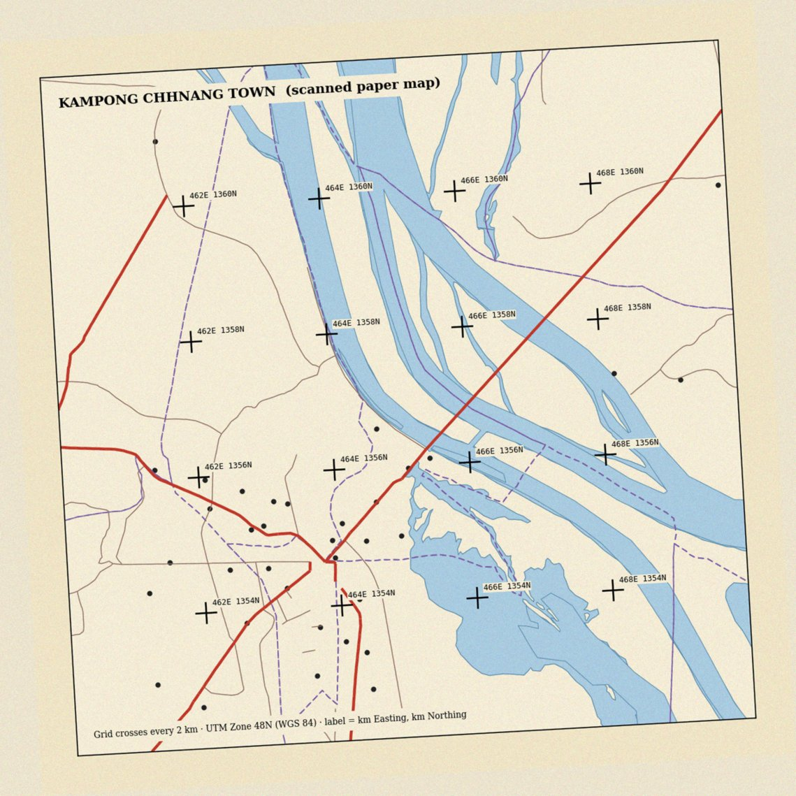

បន្ទាប់ពីបញ្ចប់មេរៀន និស្សិតអាច៖
ការិយាល័យស្រុកមានផែនទីក្រដាសចាស់ដែលបង្ហាញផ្លូវ និងទន្លេរបស់ក្រុងកំពង់ឆ្នាំង។ គេស្កេនវាជាឯកសារ JPG។ ពេលបើកក្នុង QGIS រូបភាពលេចឡើងនៅកូអរដោនេ (០, ០) ឆ្ងាយពីកម្ពុជា ហើយវាក៏រៀងបន្តិចដែរ ព្រោះក្រដាសមិនដាក់ត្រង់ពេលស្កេន។
ផែនទីនោះមានសញ្ញាបូក (+) នៃក្រឡាកូអរដោនេ UTM រៀងរាល់ ២ គីឡូម៉ែត្រ។ តើយើងប្រើសញ្ញាទាំងនោះដើម្បីដាក់រូបភាពឲ្យត្រូវទីតាំងបានដូចម្ដេច?
តើត្រូវជ្រើសចំណុចបញ្ជាប៉ុន្មាន និងនៅកន្លែងណា?
គិតម្នាក់ឯង ១ នាទី · ពិភាក្សាជាគូ ២ នាទី · ចែករំលែកជាមួយថ្នាក់។
រយៈពេលបង្រៀនដែលស្នើ៖ ៣ ម៉ោង · មេរៀនទី ៧ ក្នុងចំណោម ១៥
:material-presentation-play: ស្លាយបង្រៀនមេរៀននេះ
ព័ត៌មានភូមិសាស្ត្រដ៏មានតម្លៃជាច្រើននៅកម្ពុជា នៅតែស្ថិតលើក្រដាស៖ ផែនទីសុរិយោដីចាស់ ប្លង់ក្រុង ផែនទីប្រព័ន្ធធារាសាស្ត្រ។ ក្រៅពីនេះ វត្ថុជាច្រើនមើលឃើញលើរូបភាពផ្កាយរណប ប៉ុន្តែមិនទាន់មានជាស្រទាប់វ៉ិចទ័រ។
មេរៀននេះបង្រៀនដំណើរការពីរ៖ Georeferencing ដែលផ្ដល់ទីតាំងពិតដល់រូបភាពដែលគ្មាន CRS និង ការបំប្លែងទៅឌីជីថល (Digitizing) ដែលគូររូបរាងពីរូបភាពទៅជាវ៉ិចទ័រ។
Georeferencing គឺជាការកំណត់ទំនាក់ទំនងរវាងកូអរដោនេរូបភាព (ជួរឈរ ជួរដេក ជាភីកសែល) និងកូអរដោនេពិភពពិត (ឧ. Easting Northing ក្នុង EPSG:32648)។
ដំណើរការ៖
ប្រភព GCP ល្អ៖ ក្រឡាកូអរដោនេដែលបោះពុម្ពលើផែនទី (ល្អបំផុត) · ចំណុចប្រសព្វផ្លូវ ស្ពាន ជ្រុងអគារ ដែលមិនប្ដូរតាំងពីផែនទីត្រូវបានធ្វើ · ចំណុចវាស់ដោយ GNSS។
ជៀសវាង៖ ខ្សែទឹកទន្លេ (ប្ដូររៀងរាល់ឆ្នាំ) ដើមឈើ និងព្រំស្រែ។
រូបទី៧.១៖ Georeferencing៖ ចំណុចបញ្ជា (GCP) ភ្ជាប់ទីតាំងក្នុងរូបភាព ទៅកូអរដោនេពិភពពិត ដើម្បីគណនាសមីការបំប្លែង។
ពន្យល់ Georeferencing ជាបួនជំហាន។
ឆ្លើយក្នុង ១ នាទី មុនបន្តទៅផ្នែកបន្ទាប់។
| ការបំប្លែង | អ្វីដែលវាកែបាន | GCP អប្បបរមា | ពេលប្រើ |
|---|---|---|---|
| Helmert | រំកិល បង្វិល មាត្រដ្ឋានតែមួយ | ២ | រូបភាពមិនរៀង |
| Polynomial 1 (Affine) | ខាងលើ + មាត្រដ្ឋាន X Y ខុសគ្នា + រៀងទ្រេត | ៣ | ផែនទីស្កេន ភាគច្រើន |
| Polynomial 2 | ខាងលើ + ការរៀងកោង | ៦ | ក្រដាសរួញ ផែនទីចាស់ខូច |
| Polynomial 3 | ការរៀងកោងស្មុគស្មាញ | ១០ | កម្រប្រើ |
| Thin plate spline | បង្ខំឲ្យត្រូវ GCP គ្រប់ចំណុច | ច្រើន | ផែនទីរៀងមិនទៀងទាត់ |
ក្បួនជាក់ស្ដែង៖ ចាប់ផ្ដើមដោយ Polynomial 1 ជាមួយ GCP ៨ ទៅ ១២ ដែលរាយពេញផែនទី។
ប្ដូរទៅ Polynomial 2 លុះត្រាតែមានភស្តុតាងថាផែនទីរៀងកោង ហើយមាន GCP គ្រប់គ្រាន់។
ការចែកចាយ GCP សំខាន់ដូចចំនួនដែរ។ GCP ដែលប្រមូលផ្ដុំនៅកណ្ដាល ធ្វើឲ្យជ្រុងផែនទីខុសខ្លាំង ទោះ RMS ទាបក៏ដោយ។
រូបទី៧.២៖ ចំនួន GCP ដូចគ្នា (៨) ប៉ុន្តែការចែកចាយខុសគ្នា។ GCP ដែលប្រមូលផ្ដុំ ធ្វើឲ្យតំបន់ឆ្ងាយ ជាពិសេសជ្រុងផ្ទុយ មានកំហុសធំ ទោះ RMS ទាបក៏ដោយ។
ក្រោយគណនាសមីការ GCP នីមួយៗមាន កំហុសសំណល់ (Residual) គឺចម្ងាយរវាងទីតាំងដែលអ្នកបញ្ចូល និងទីតាំងដែលសមីការព្យាករ។
RMS error ជាឫសការ៉េនៃមធ្យមការ៉េកំហុសទាំងនោះ។
ដើម្បីដឹងកំហុសពិត ត្រូវទុក GCP ខ្លះ មិនប្រើក្នុងការគណនា ហៅថា ចំណុចពិនិត្យ (Check points) ហើយវាស់កំហុសលើចំណុចទាំងនោះ។
GCP មួយត្រូវបានចុចខុសទីតាំង។ រកវាពីតារាងកំហុស បិទវា ហើយប្រៀបធៀប RMS។ បន្ទាប់មក ប្ដូរទៅ Polynomial ២ ជាមួយ GCP តែ ៦ ហើយមើលកំហុសលើចំណុចពិនិត្យ។
ហេតុអ្វីក្រឡាកូអរដោនេជា GCP ល្អជាងខ្សែទឹកទន្លេ?
ឆ្លើយក្នុង ១ នាទី មុនបន្តទៅផ្នែកបន្ទាប់។
Digitizing គឺជាការគូរវត្ថុលើរូបភាព (ផែនទី georeferenced ឬរូបភាពផ្កាយរណប) ដើម្បីបង្កើតស្រទាប់វ៉ិចទ័រ។
ក្បួនសំខាន់៖
បង្កើនកម្រិតអត់ធ្មត់ ហើយសង្កេតចំនួនចំណុច និងប្រវែងស្ទឹង។ តើចំណុចប៉ុន្មានភាគរយដែលអាចលុបបាន ដោយរូបរាងស្ទើរមិនប្ដូរ?
ពេលគូរតិចពេក ស្ទឹងខ្លីជាងពិត ហើយកោងតូចៗបាត់។
ពេលគូរច្រើនពេក ឯកសារធំ ហើយកំហុសដៃរបស់អ្នកគូរក្លាយជា «ព័ត៌មាន» ក្លែងក្លាយ។
ស្រទាប់ដែលគូររួច ទទួលមរតកកំហុសទាំងអស់ពីប្រភព៖
កំហុសសរុប ≈ កំហុសផែនទីដើម + កំហុសស្កេន/Georeferencing + កំហុសគូរ
ផែនទីមាត្រដ្ឋាន ១:៥០ ០០០ ដែលគូសដោយដៃ មានភាពត្រឹមត្រូវប្រហែល ០,៥ មម លើក្រដាស ស្មើ ២៥ ម លើដី។
ទោះ Georeferencing ល្អឥតខ្ចោះ ក៏ស្រទាប់ដែលគូរមិនអាចត្រឹមត្រូវជាង ២៥ ម បានដែរ។
ត្រូវកត់ត្រានៅក្នុងមេតាទិន្នន័យ៖ ផែនទីប្រភព មាត្រដ្ឋាន ឆ្នាំ ចំនួន GCP ប្រភេទការបំប្លែង RMS និងមាត្រដ្ឋានគូរ។

រូបទី៧.៣៖ ផែនទីស្កេនក្រុងកំពង់ឆ្នាំងដែលប្រើក្នុងលំហាត់ទី៧។ រូបភាពរៀង ៣,២° ហើយមានសញ្ញាបូក ១៦ នៃក្រឡា UTM រៀងរាល់ ២ គម ដែលអាចប្រើជា GCP។
ផែនទីស្កេនមានសញ្ញាបូក ១៦ (៤ × ៤) រៀងរាល់ ២ គម ក្នុង UTM 48N។ ១ ភីកសែលស្មើប្រហែល ១០ ម លើដី។ (ផែនទីនេះប្រើក្នុង លំហាត់ទី៧)។
ប្រើសញ្ញាបូក ៩ ដែលរាយពេញផែនទី៖ ជ្រុងទាំងបួន ពាក់កណ្ដាលគែមទាំងបួន និងកណ្ដាល។
ទុក ៣ ទៀតជាចំណុចពិនិត្យ។ សញ្ញា 464E 1356N ត្រូវបញ្ចូលជា X = 464000 · Y = 1356000។
ផែនទីត្រូវបានបង្វិលពេលស្កេន ប៉ុន្តែក្រដាសមិនរួញ។
Polynomial 1 ត្រូវការ GCP ៣ ហើយយើងមាន ៩ ដែលផ្ដល់ «កម្រិតសេរីភាព» គ្រប់គ្រាន់សម្រាប់រកកំហុស។
ឧបមាថា RMS = ២,៣ ភីកសែល ហើយ GCP មួយមានកំហុស ៦ ភីកសែល ខណៈផ្សេងទៀតតិចជាង ១។
GCP នោះទំនងជាចុចខុស។ ក្រោយចុចម្ដងទៀត RMS ធ្លាក់មក ០,៦ ភីកសែល (ប្រហែល ៦ ម)។
វាស់កំហុសលើចំណុចពិនិត្យទាំង ៣៖ ៥ ម · ៨ ម · ៧ ម។
ប្រហាក់ប្រហែល RMS ដូច្នេះការបំប្លែងមិន overfit ទេ។ ត្រួត Kh_Lake_n_Mekong ពីលើ ដើម្បីពិនិត្យដោយភ្នែកផងដែរ។
យើងមិនអាចសន្និដ្ឋានថាផ្លូវដែលគូរត្រឹមត្រូវ ៦ ម ទេ។ RMS វាស់តែភាពស៊ីគ្នារវាងរូបភាព និងក្រឡាកូអរដោនេ។ វាមិនវាស់ថាអ្នកធ្វើផែនទីដើម គូសផ្លូវត្រឹមត្រូវប៉ុណ្ណា ឬផ្លូវបានប្ដូរទីតាំងតាំងពីពេលនោះទេ។
ធ្វើ លំហាត់ទី៧ ក្នុង QGIS នៅសៀវភៅអនុវត្ត។
លំហាត់ប្រើទិន្នន័យកម្ពុជាពិត ហើយមានប្រអប់ពិនិត្យលទ្ធផលដោយខ្លួនឯង។
Georeferencing ភ្ជាប់កូអរដោនេរូបភាពទៅកូអរដោនេពិភពពិតតាមរយៈ GCP។ Polynomial 1 ត្រូវការ GCP យ៉ាងតិច ៣ ហើយសមស្របសម្រាប់ផែនទីស្កេនភាគច្រើន។ GCP ត្រូវរាយពេញផែនទី ហើយត្រូវមានចំណុចពិនិត្យ ព្រោះ RMS ទាបមិនធានាភាពត្រឹមត្រូវ។
Digitizing បង្កើតវ៉ិចទ័រពីរូបភាព ដោយប្រើមាត្រដ្ឋានថេរ Snapping និងទម្រង់គុណលក្ខណៈ។ ភាពត្រឹមត្រូវនៃលទ្ធផលមិនអាចល្អជាងផែនទីប្រភពទេ។
Georeferencing មិនធ្វើឲ្យផែនទីចាស់ «ត្រឹមត្រូវ» ទេ។ វាគ្រាន់តែដាក់ផែនទីនោះនៅកន្លែងត្រឹមត្រូវ ជាមួយកំហុសទាំងអស់ដែលវាមាន។
| ពាក្យខ្មែរ | ពាក្យអង់គ្លេស | អត្ថន័យខ្លី |
|---|---|---|
| ការកំណត់ទីតាំងរូបភាព | Georeferencing | ភ្ជាប់រូបភាពទៅ CRS |
| ចំណុចបញ្ជា | Ground Control Point (GCP) | ចំណុចស្គាល់ទីតាំងទាំងពីរ |
| ការបំប្លែង | Transformation | សមីការពីភីកសែលទៅកូអរដោនេ |
| កំហុសសំណល់ | Residual | កំហុសនៃ GCP មួយ |
| កំហុស RMS | RMS error | កំហុសមធ្យមនៃ GCP ទាំងអស់ |
| ចំណុចពិនិត្យ | Check point | GCP មិនប្រើគណនា សម្រាប់វាស់កំហុស |
| ការគូសវ៉ិចទ័រ | Digitizing | គូររូបរាងពីរូបភាព |
| ការចាប់ជាប់ | Snapping | ធ្វើឲ្យចំណុចជាប់គ្នាពិតប្រាកដ |
| ពាក្យខ្មែរ | ពាក្យអង់គ្លេស | អត្ថន័យខ្លី |
|---|---|---|
| ការគណនាក្រឡាឡើងវិញ | Resampling | បង្កើតរ៉ាស្ទ័រថ្មីក្រោយបំប្លែង |
រកផែនទីក្រដាស ឬរូបភាពផែនទីចាស់មួយនៃតំបន់ដែលអ្នកស្គាល់ (ផែនទីក្នុងសៀវភៅ ប្លង់សាលា ផែនទីស្រុក)។ សរសេរមួយទំព័រ៖ ចំណុចណាខ្លះអាចជា GCP និងហេតុផល · ការបំប្លែងដែលអ្នកនឹងជ្រើស · ភាពត្រឹមត្រូវដែលអ្នករំពឹងពីមាត្រដ្ឋានផែនទី · វត្ថុអ្វីខ្លះដែលមានតម្លៃក្នុងការគូរជាវ៉ិចទ័រ។
យើងបានឃើញកំហុសច្រើនប្រភេទរួចមកហើយ៖ លេខ ០ ដែលបាត់ ការភ្ជាប់ដែលបរាជ័យ GPS លម្អៀង និង RMS។ ដល់ពេលរៀបចំពួកវាឲ្យជាប្រព័ន្ធ៖
«តើយើងវាស់ និងរាយការណ៍គុណភាពទិន្នន័យដោយរបៀបណា ឲ្យអ្នកប្រើដឹងថាអាចទុកចិត្តបានប៉ុណ្ណា?»
អានមេរៀនពេញ និងធ្វើលំហាត់ទី៧
https://khgeo.github.io/gis-fundamentals/lessons/lesson-07/